@CBSNews
📝 原文: Brother of suspect in deaths of 2 Tampa doctoral students: "We tried to warn police in the past"
🇨🇳 译文: 导致两名坦帕博士生死亡的嫌疑人兄弟：“我们过去曾试图警告警方”

🕒 2026-04-28T02:40:00+00:00
| 来源 | 旧窗口内数量 | 本次新增 | 本次淘汰 | 当前窗口内共有 |
|---|---|---|---|---|
| 推文 + Dawn 新闻 | 0 | 55 | 0 | 55 |
| ARY News | 0 | 0 | 0 | 0 |
注：淘汰数 = 旧窗口内数量 + 本次新增 - 当前窗口内共有
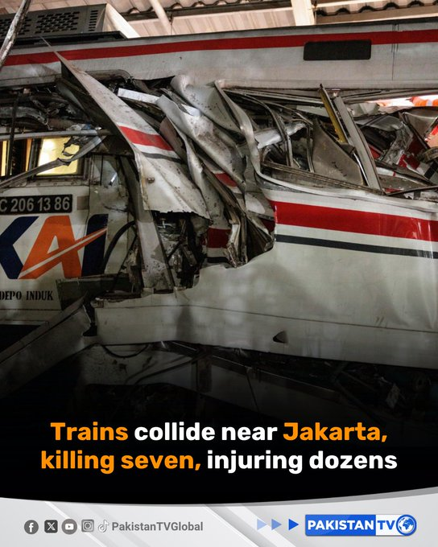


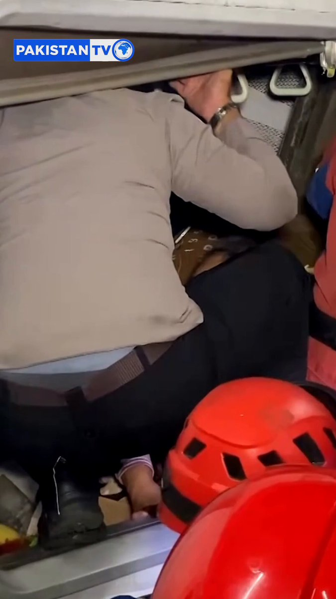
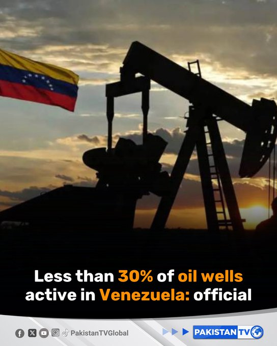


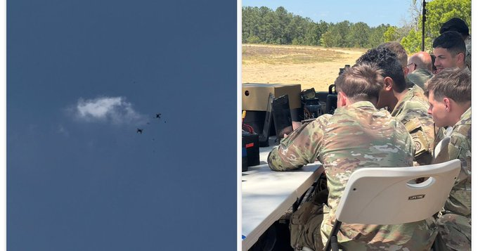
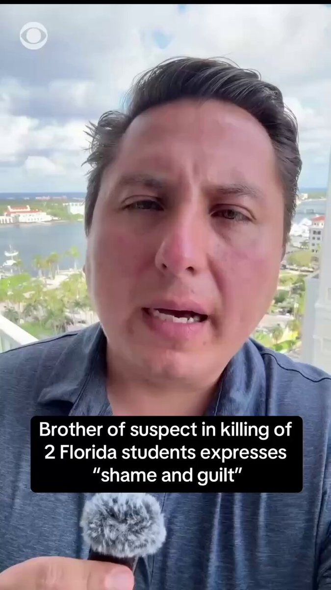
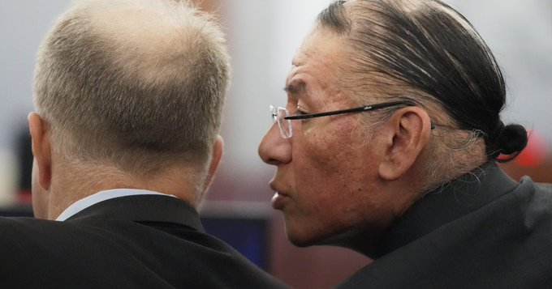
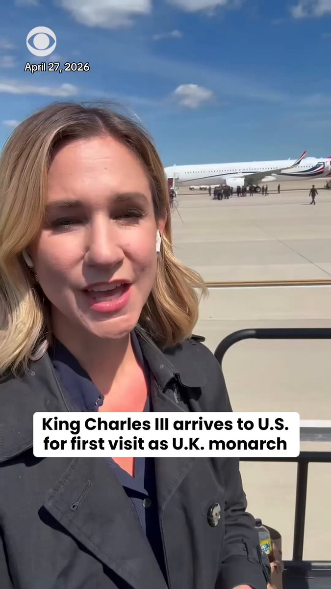


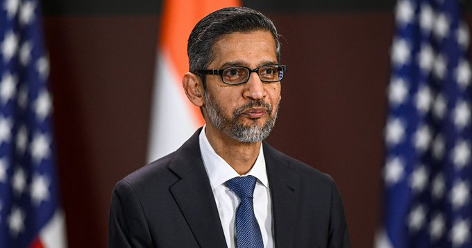
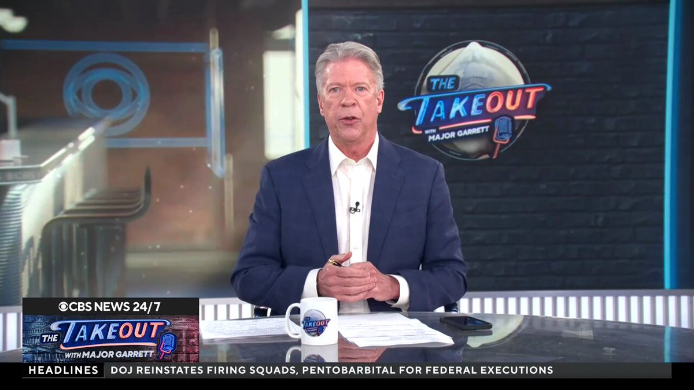
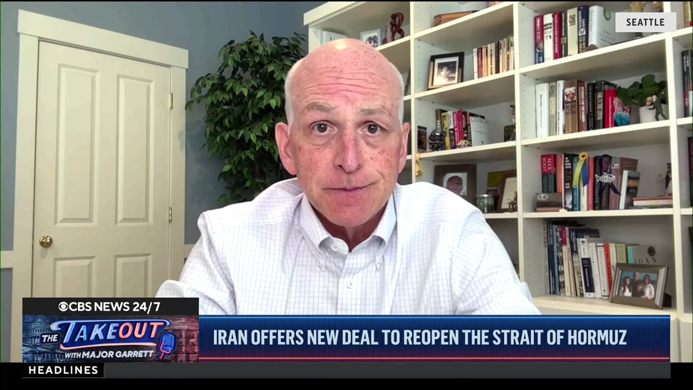
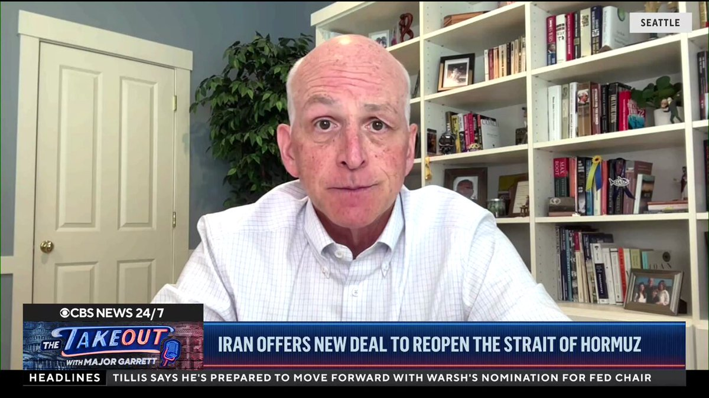


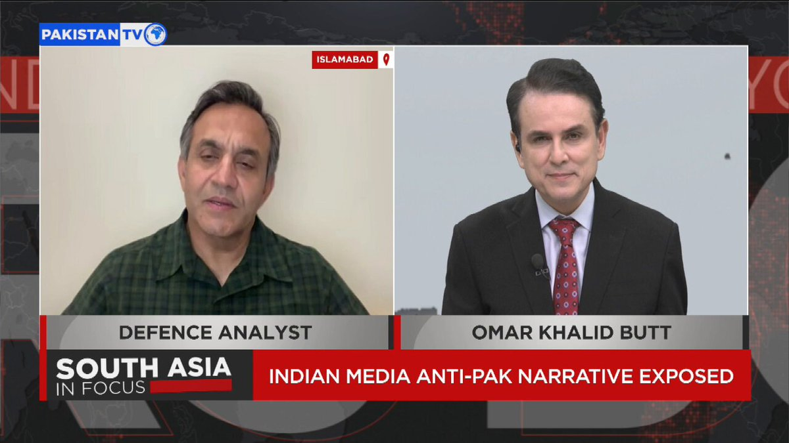
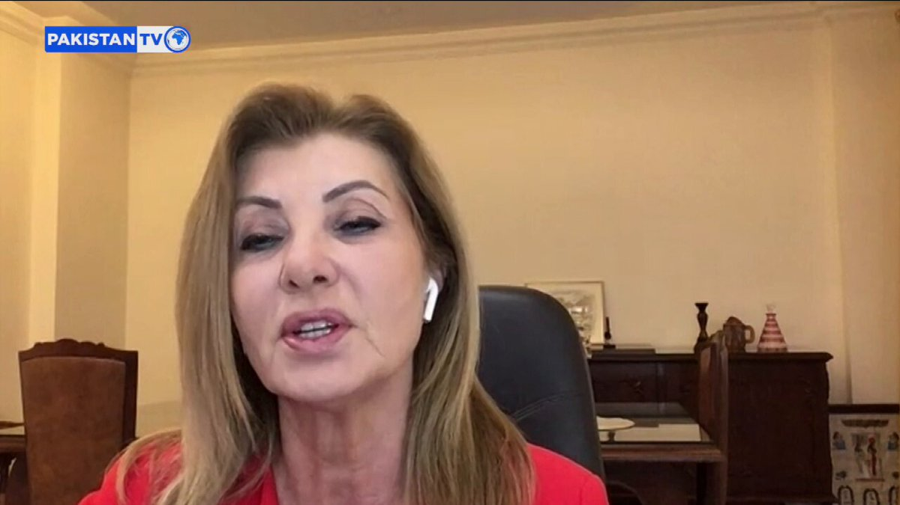

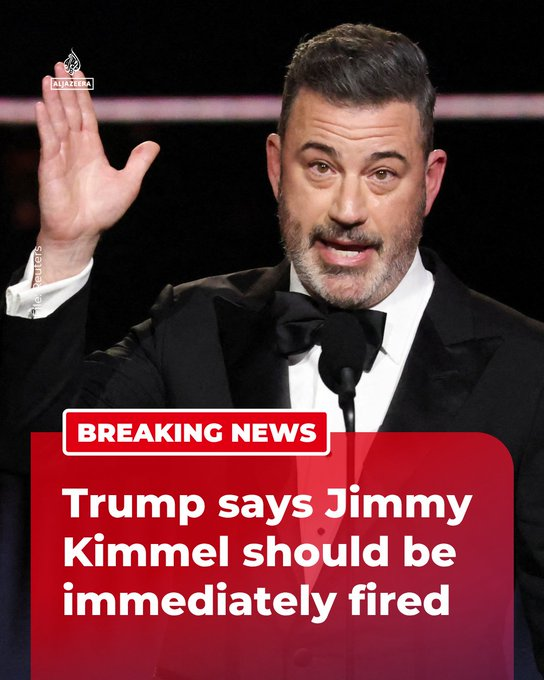


暂无文章。